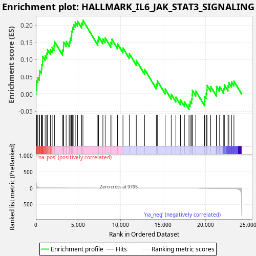
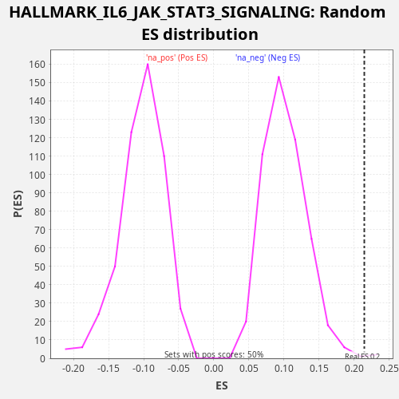

| Dataset | LabCL |
| Phenotype | NoPhenotypeAvailable |
| Upregulated in class | na_pos |
| GeneSet | HALLMARK_IL6_JAK_STAT3_SIGNALING |
| Enrichment Score (ES) | 0.21459538 |
| Normalized Enrichment Score (NES) | 2.1057 |
| Nominal p-value | 0.004040404 |
| FDR q-value | 0.0058536963 |
| FWER p-Value | 0.072 |

| SYMBOL | RANK IN GENE LIST | RANK METRIC SCORE | RUNNING ES | CORE ENRICHMENT | |
|---|---|---|---|---|---|
| 1 | STAT1 | 21 | 272.058 | 0.0134 | Yes |
| 2 | IL6ST | 106 | 62.022 | 0.0242 | Yes |
| 3 | STAT2 | 119 | 54.302 | 0.0380 | Yes |
| 4 | IL6 | 234 | 27.409 | 0.0476 | Yes |
| 5 | CNTFR | 422 | 14.780 | 0.0541 | Yes |
| 6 | BAK1 | 442 | 13.915 | 0.0676 | Yes |
| 7 | IL7 | 655 | 8.211 | 0.0732 | Yes |
| 8 | CD14 | 697 | 7.573 | 0.0857 | Yes |
| 9 | IL15RA | 790 | 6.386 | 0.0962 | Yes |
| 10 | IRF9 | 810 | 6.189 | 0.1097 | Yes |
| 11 | CXCL10 | 1096 | 3.825 | 0.1122 | Yes |
| 12 | PTPN2 | 1282 | 2.896 | 0.1189 | Yes |
| 13 | PTPN1 | 1365 | 2.543 | 0.1297 | Yes |
| 14 | IRF1 | 1715 | 1.663 | 0.1296 | Yes |
| 15 | CSF1 | 1924 | 1.309 | 0.1353 | Yes |
| 16 | IL1R1 | 2146 | 1.062 | 0.1404 | Yes |
| 17 | HMOX1 | 2190 | 1.018 | 0.1529 | Yes |
| 18 | STAT3 | 3138 | 0.445 | 0.1280 | Yes |
| 19 | MAP3K8 | 3253 | 0.405 | 0.1376 | Yes |
| 20 | CCR1 | 3271 | 0.401 | 0.1512 | Yes |
| 21 | OSMR | 3567 | 0.321 | 0.1533 | Yes |
| 22 | INHBE | 3926 | 0.246 | 0.1527 | Yes |
| 23 | CD36 | 4042 | 0.226 | 0.1623 | Yes |
| 24 | ITGB3 | 4181 | 0.202 | 0.1709 | Yes |
| 25 | CXCL11 | 4235 | 0.196 | 0.1829 | Yes |
| 26 | GRB2 | 4325 | 0.184 | 0.1936 | Yes |
| 27 | HAX1 | 4470 | 0.165 | 0.2019 | Yes |
| 28 | EBI3 | 4640 | 0.146 | 0.2092 | Yes |
| 29 | IL13RA1 | 4919 | 0.121 | 0.2120 | Yes |
| 30 | TNFRSF1B | 5400 | 0.085 | 0.2064 | Yes |
| 31 | LTBR | 5548 | 0.077 | 0.2146 | Yes |
| 32 | SOCS1 | 7303 | 0.017 | 0.1563 | No |
| 33 | TYK2 | 7393 | 0.016 | 0.1669 | No |
| 34 | MYD88 | 7899 | 0.009 | 0.1603 | No |
| 35 | STAM2 | 8167 | 0.006 | 0.1636 | No |
| 36 | IFNGR1 | 8831 | 0.002 | 0.1504 | No |
| 37 | CSF3R | 8961 | 0.001 | 0.1594 | No |
| 38 | PLA2G2A | 9626 | 0.000 | 0.1462 | No |
| 39 | TNF | 10265 | 0.000 | 0.1341 | No |
| 40 | SOCS3 | 11006 | -0.001 | 0.1178 | No |
| 41 | CD38 | 11835 | -0.005 | 0.0978 | No |
| 42 | CXCL1 | 12810 | -0.015 | 0.0718 | No |
| 43 | IL10RB | 14197 | -0.040 | 0.0287 | No |
| 44 | TLR2 | 14311 | -0.043 | 0.0384 | No |
| 45 | TNFRSF1A | 15233 | -0.074 | 0.0145 | No |
| 46 | CXCL3 | 15949 | -0.102 | -0.0008 | No |
| 47 | IL18R1 | 16498 | -0.133 | -0.0091 | No |
| 48 | CBL | 17043 | -0.172 | -0.0174 | No |
| 49 | TNFRSF12A | 17503 | -0.212 | -0.0221 | No |
| 50 | PTPN11 | 18044 | -0.273 | -0.0301 | No |
| 51 | IL17RB | 18180 | -0.289 | -0.0214 | No |
| 52 | IFNAR1 | 18361 | -0.313 | -0.0146 | No |
| 53 | PDGFC | 18411 | -0.319 | -0.0023 | No |
| 54 | PIM1 | 18438 | -0.322 | 0.0109 | No |
| 55 | IL17RA | 18844 | -0.388 | 0.0084 | No |
| 56 | JUN | 19880 | -0.626 | -0.0201 | No |
| 57 | IL1B | 19910 | -0.635 | -0.0070 | No |
| 58 | CSF2 | 20054 | -0.679 | 0.0014 | No |
| 59 | IFNGR2 | 20140 | -0.713 | 0.0121 | No |
| 60 | ACVRL1 | 20177 | -0.727 | 0.0249 | No |
| 61 | ITGA4 | 20603 | -0.917 | 0.0216 | No |
| 62 | ACVR1B | 21272 | -1.311 | 0.0083 | No |
| 63 | TNFRSF21 | 21287 | -1.323 | 0.0220 | No |
| 64 | CD9 | 21647 | -1.679 | 0.0214 | No |
| 65 | IL1R2 | 22133 | -2.446 | 0.0156 | No |
| 66 | LEPR | 22211 | -2.607 | 0.0267 | No |
| 67 | IL4R | 22639 | -4.000 | 0.0234 | No |
| 68 | FAS | 22743 | -4.549 | 0.0334 | No |
| 69 | CD44 | 23059 | -6.771 | 0.0347 | No |
| 70 | TGFB1 | 23338 | -10.514 | 0.0374 | No |

{kind=link}
{kind=link}